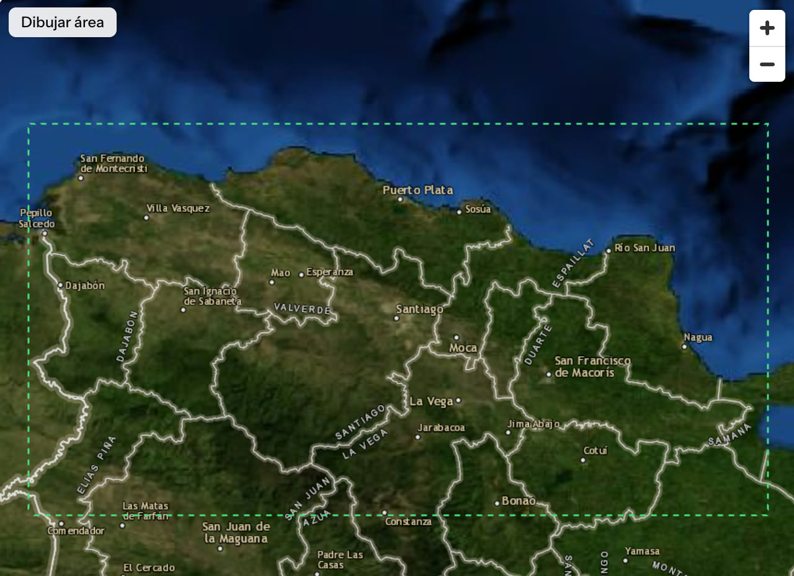
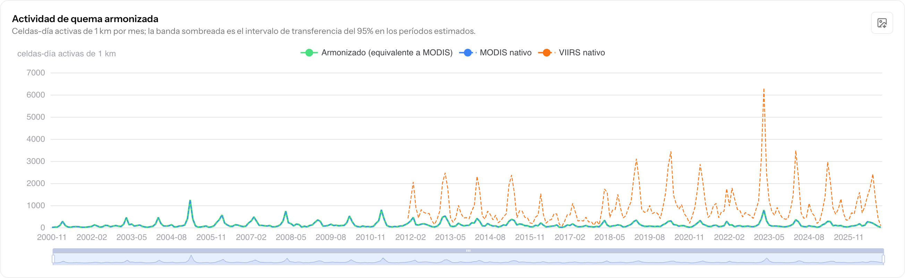
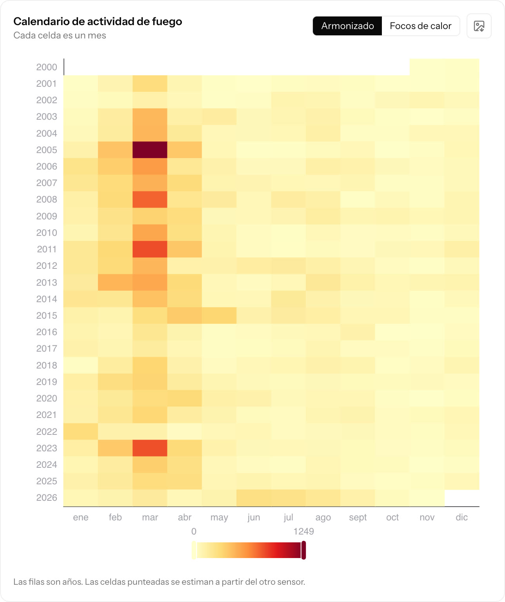
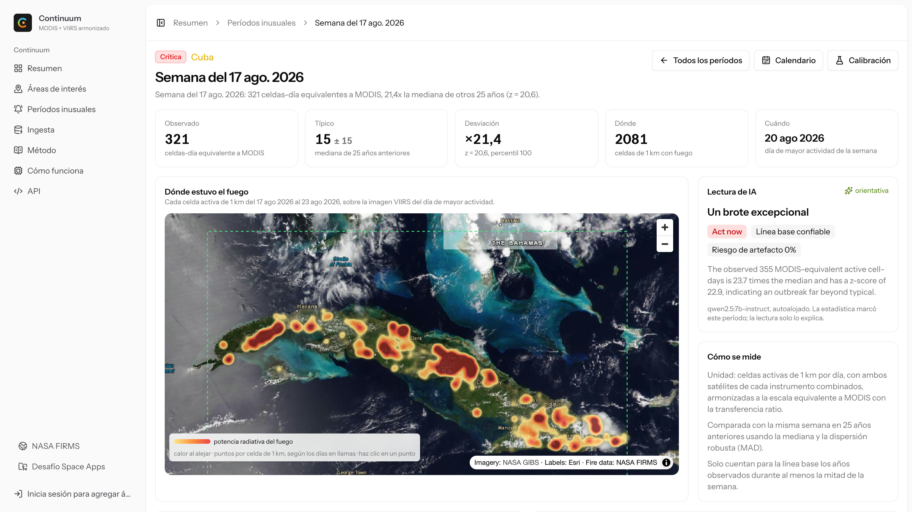

NASA Space Apps Challenge 2026 · Armonización de focos de calor MODIS y VIIRS
Un solo calendario de fuego con 26 años de datos satelitales de la NASA
Equipo Continuum · Elminson y Miguel · Santo Domingo, República Dominicana

MODIS · desde 2000
Píxeles de 1 km en Terra y Aqua
VIIRS · desde 2012
Píxeles de 375 m: cerca de 8× más celdas-día con fuego en La Española
Mezcla ingenua
Inventa un auge de incendios en 2012 que nunca ocurrió
1
Un frente de fuego es una celda-día para ambos sensores.
2
Terra + Aqua; Suomi NPP + NOAA-20 + NOAA-21.
3
Razón mensual con intervalo bootstrap y un umbral de potencia de fuego visible, ajustados con 2012–2026.
Error frente a la mezcla ingenua, reservando uno de cada cuatro días
| Área | Menos error | Días de prueba |
|---|---|---|
| La Española | −89% | 1.352 |
| Cuba | −86% | 1.344 |
| Gran Chaco | −83% | 1.353 |
| Cerrado | −76% | 1.220 |

Elige un área pública o dibuja la tuya
O escribe sus esquinas en latitud y longitud.
Escoge las fechas y compara con la mediana de 25 años
Focos de calor, actividad armonizada y cómo se compara este periodo con cada año anterior.
Mira la temporada de fuego
La Española quema de febrero a abril, con el pico en marzo.
Llévatelo
Gráficos en PNG, el calendario y los focos en CSV, una API pública. En español e inglés.

×21,4
la mediana de la misma semana en otros 25 años
321 celdas-día equivalentes a MODIS frente a un típico de 15 ± 15.
Sitios de monitoreo reportaron varios incendios forestales en Cuba entre el 15 y el 25 de agosto de 2026.
26,2 M
detecciones de NASA FIRMS cargadas
26 años
de noviembre de 2000 a hoy
Cada hora
datos nuevos de FIRMS, rearmonizados cada 6 horas
MODIS Colección 6.1
Terra y Aqua, 1 km, procesamiento estándar y casi en tiempo real
VIIRS 375 m
Suomi NPP, NOAA-20, NOAA-21; desde que Suomi NPP se detuvo el 2 nov 2026, siguen NOAA-20 y NOAA-21
Imágenes NASA GIBS
La imagen satelital del mismo día bajo cada mapa de fuego
Código abierto (MIT) · API JSON pública · 298 pruebas automáticas · github.com/elminson/continuum
Apuntarlo a cualquier territorio, empezando por República Dominicana y Haití.
MODIS se apaga hacia enero de 2027. Ya probado: solo con VIIRS, el error diario baja 62–89 % frente a un cambio ingenuo.
Añadir máscaras de nubes por celda y contraste con área quemada.
continuum.techspark.dev
Jueces: judge@continuum.techspark.dev · SpaceApps2026! · Código: github.com/elminson/continuum